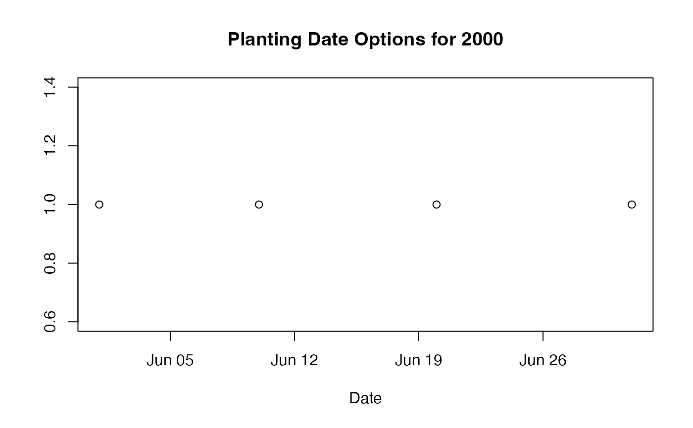

Build Emergence Dates from Year and Month-Day Combinations
Source:R/build_epicrop_emergence.R
build_epicrop_emergence.RdConstructs a vector of emergence (planting) dates by combining years with
month-day patterns. Returns a sorted data.table::IDate vector tagged with
class epicrop.emerge for use with run_epicrop_model() and related
batch modelling functions.
Arguments
- years
Integer vector of years. Examples:
2000– single yearc(2000, 2002, 2005)– specific years2000:2005– range (recommended for clarity)
Dates are constructed as
paste0(year, month_day), so years can be any 4-digit integer. No validation against real calendar (e.g., allows year 9999).- month_day
Character vector of month-day patterns. Each string specifies a fixed planting date recurring each year. Format (either):
"-MM-DD"with leading dash (e.g.,"-06-01","-12-25")"MM-DD"without dash (e.g.,"06-01","12-25")
Validation:
Month: 01-12 (leading zero required)
Day: 01-31 (leading zero required)
Separator: dash (
-), not.or/
Examples of valid input:
c("-06-01", "-07-15", "-08-31")c("01-15", "06-01", "12-25")(no leading dash)
Invalid examples (will abort):
"6-1"(no leading zeros)"-06/01"(wrong separator)"-13-01"(month > 12)"-02-30"(day > 29 for Feb; caught during date parsing)
Value
A sorted vector of data.table::IDate emergence dates with class
epicrop.emerge. Inherits from base::Date and data.table::IDate,
so standard date operations (subsetting, arithmetic, formatting) work.
Length = length(years) × length(month_day).
Details
Internal Algorithm
Normalize
month_daystrings:If matches
"^-(0[1-9]|1[0-2])-(0[1-9]|[12][0-9]|3[01])$": use as-isIf matches
"^(0[1-9]|1[0-2])-(0[1-9]|[12][0-9]|3[01])$": prepend-Otherwise: abort with error message
Create cross-product: every year × every normalized month-day
Construct ISO date strings:
sprintf("%s%s", year, month_day)Parse to data.table::IDate with format
"%Y-%m-%d"Sort by date and tag with
epicrop.emergeclass
Leap Year Handling
R's Date class handles leap years automatically:
"2000-02-29"is valid (2000 is leap year)"2001-02-29"fails to parse (2001 is not leap year)
Invalid dates (e.g., Feb 30 for any year) are caught during parsing and trigger an abort.
Performance
Fast even for large year/month-day combinations:
Cross-product via
data.table::CJ()(optimized)Vectorised date construction via
sprintf()Sorting via base
sort()on IDate (fast integer representation)
Example: 20 years × 10 month-days = 200 dates constructed in < 1 ms.
Purpose
Simplifies creation of emergence date vectors for epidemiological modelling scenarios where you want to:
Test multiple planting dates within a season (e.g., June 1, 15, 30)
Replicate across multiple years (e.g., 2000-2005)
Generate all combinations automatically
Eliminates manual date construction: instead of typing out 18 dates (6 month-days × 3 years), write:
build_epicrop_emergence(2000:2002, c("-06-01", "-06-15", "-07-01"))Date Format
Month-day strings can be provided in two equivalent formats:
With leading dash (recommended):
"-06-01","-12-31"Matches ISO 8601 suffix for
"YYYY-MM-DD"Function uses these directly
Without leading dash:
"06-01","12-31"Function prepends
-automaticallyLess error-prone if mixed formats appear
Both c("-06-01", "-06-15") and c("06-01", "06-15") produce identical
output.
Validation catches:
Invalid months (not 01-12)
Invalid days (not 01-31 for month; leap years handled by R's Date class)
Malformed strings (typos, missing separators)
Output Class
The returned vector has class epicrop.emerge (subclass of
data.table::IDate and base::Date). This tag enables:
Input validation in
run_epicrop_model()(checks class, not just type)Clear intent: a vector of planting dates, not arbitrary dates
Potential future S3 methods (e.g.,
plot.epicrop.emerge())
See also
run_epicrop_model()– primary consumer ofepicrop.emergevectorsget_epicrop_weather_list()– companion for building weather listsbase::Date, data.table::IDate – underlying date classes
base::seq.Date()– alternative for building date sequences
Author
Adam H. Sparks, adamhsparks@gmail.com
Examples
# Example 1: Basic usage - two years, three planting dates
years <- 2000:2001
month_day <- c("-06-01", "-06-15", "-07-01")
em <- build_epicrop_emergence(years, month_day)
em
#> [1] "2000-06-01" "2000-06-15" "2000-07-01" "2001-06-01" "2001-06-15"
#> [6] "2001-07-01"
# Check class
class(em) # "epicrop.emerge" "IDate" "Date"
#> [1] "epicrop.emerge" "IDate" "Date"
length(em) # 6 (2 years × 3 month-days)
#> [1] 6
# Example 2: Month-day without leading dash (auto-normalized)
em2 <- build_epicrop_emergence(2000, c("06-01", "06-15", "07-01"))
identical(em2, build_epicrop_emergence(2000, c("-06-01", "-06-15", "-07-01")))
#> [1] TRUE
# Example 3: Single year, multiple planting windows
# Early, mid, late June + early July
single_year <- build_epicrop_emergence(
years = 2000,
month_day = c("-06-01", "-06-10", "-06-20", "-07-01")
)
single_year
#> [1] "2000-06-01" "2000-06-10" "2000-06-20" "2000-07-01"
plot(single_year, rep(1, length(single_year)),
main = "Planting Date Options for 2000",
xlab = "Date", ylab = "")

# Example 4: Long-term study across 10 years
long_term <- build_epicrop_emergence(
years = 1990:1999,
month_day = c("-06-15", "-07-01") # Two standard planting dates
)
length(long_term) # 20 (10 years × 2 dates)
#> [1] 20
# Example 5: Use in batch modelling workflow
years <- 2000:2002
month_day <- c("-06-30", "-07-15")
emergence <- build_epicrop_emergence(years, month_day)
# Fetch weather data (one year per list element)
wth_list <- get_epicrop_weather_list(
lonlat = c(121.255669, 14.167425),
start_date = month_day,
duration = 120L,
years = years
)
# Run disease model across all emergence dates
results <- run_epicrop_model(
model_fun = leaf_blast,
emergence_dates = emergence,
wth_list = wth_list,
output = "audpc"
)
results # AUDPC for each emergence date
#> Key: <emergence, AUDPC>
#> emergence AUDPC
#> <epicrop.emerge> <num>
#> 1: 2000-06-30 39.08646
#> 2: 2000-07-15 37.25022
#> 3: 2001-06-30 38.98097
#> 4: 2001-07-15 42.57670
#> 5: 2002-06-30 38.30150
#> 6: 2002-07-15 39.27781
# Example 6: Subset and filter emergence dates
em <- build_epicrop_emergence(2000:2002, c("-06-01", "-07-01"))
# Keep only June plantings
june_only <- em[month(em) == 6]
#> Error in month(em): could not find function "month"
june_only
#> Error: object 'june_only' not found
# Keep only 2001 plantings
y2001 <- em[year(em) == 2001]
#> Error in year(em): could not find function "year"
y2001
#> Error: object 'y2001' not found
# Example 7: Error handling
if (FALSE) { # \dontrun{
# Invalid month (13)
build_epicrop_emergence(2000, "-13-01")
# Error: Invalid month_day value(s): -13-01
# Invalid day (32)
build_epicrop_emergence(2000, "-02-30")
# Error: Failed to construct emergence dates
# Typo in format (no dash, two-digit year in string)
build_epicrop_emergence(2000, "6-1")
# Error: Invalid month_day value(s): 6-1
} # }